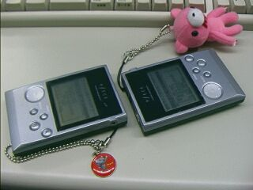
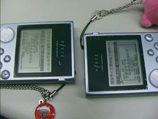

初期画面

演奏中画面

設定メニュー
ＭＭ音楽館
Ver.0.9 for MMC
by まどか
初期画面 |
演奏中画面 |
設定メニュー |
 ファイル操作メニュー |
 ファイル受信中画面 |
 ファイル送信中画面 |
 ファイル検索中 |
 通常ファイル表示中 |
※画面のキャプチャにはまかべひろし さんのPceCapsを使用しています
| 概要 |
| このアプリケーションは、フリーのMML演奏プログラムです。 バイナリ化されたMMLファイルを選択して演奏させることができる、いわゆる携帯MusicPlayerです。 旧き良き時代のＭＭＬブーム（？）をP/ECEでもう一度！ という願いを込めて作りました。どんどんＭＭＬで曲を作ってくださいね（＾o＾)/ muccが吐き出す拡張子.pmdのバイナリファイルに対応しています。 連続演奏が可能で、無限ループ指定の曲も一定時間でフェードアウトし､次の曲に自動的に進みます。 また、P/ECE付属のFilePack.exeで*.pmdファイルをパックした、*.fpkファイルにも対応していますので、大量に*.pmdがある場合は、パックするとフラッシュメモリを有効に使えて便利です。 さらに、ファイル操作メニューから、音楽データファイルの赤外線通信とファイルの削除が行えるので､パソコンが無くてもP/ECE間での音楽ファイルのやり取りが出来て､まさにモバイル！（＾＾； 設定メニューで、通常ファイル表示をＯＮにすれば、音楽データファイル以外のファイルも赤外線通信で送ったりできます。 その他、ボリュームコントロール機能や､画面の表示をカットする簡易省電力モードもあります。 2004/10/07追記 拙作のMMC対応カーネルを利用して、MM音楽館をMMC/SDカードに対応させました（＾＾ 微妙に操作性もUPしてます。 このMM音楽館をpmdやfpkと一緒にMMCの中に入れておけば、フラッシュメモリの容量を気にすることなく、たくさんの音楽を楽しむことができます（＾＾ （MCメニューアプリは必要ですけどね） このアプリはMMCを利用しているので、MMC対応カーネルVer.1.23以降専用です。 MMC上の音楽ファイルが扱えるようになっていること以外、基本的に以前のMM音楽館と変わらないので、オフィシャルのカーネルを利用指定方は通常版のMM音楽館をお使いください。 ちなみに、MMC上のファイルを削除することはできない＆MMCを使えば容量を気にすることがなくなるので、以前のVer.にあった「ファイル削除」機能はなくなりました。 |
| 使用方法 |
 PIECEコミュニケータを使って、"mmmh_m.pex"をP/ECEに転送してください。  起動すると、フラッシュメモリおよび、接続されているMMC/SDカード内の.pmdファイルを検索して、リストとして表示します。 右に表示されている数字はファイルサイズです。 十字ＰＡＤでカーソル(♪)を操作し、演奏させたいファイルを選択します。 そして、Ａボタンで演奏の開始・停止を行います。 演奏中は、MMLファイルに埋め込まれている曲情報と、ファイル名、演奏時間を表示します。 曲情報が画面に入りきらない場合は､演奏開始５秒後からスクロールして表示します。 画面左下に表示されているのは、フラッシュメモリの残り容量で、右下にはファイルリストのページ数が表示されます。 十字ＰＡＤの左右でページ単位のカーソル移動が出来ます。 STARTボタンを押すと、設定メニュー画面になります。 十字ＰＡＤの上下で項目を選択し、十字ＰＡＤの左右で設定値を変更します。 再びSTARTボタンを押すか、Aボタンを押すことで、通常画面に復帰します。 設定項目の意味は以下のとおりです。 [ループ期間] MMLで無限ループ指定となっている曲を、指定時間でフェードアウトさせるときの演奏時間を設定します。単位は秒です。 指定の時間分演奏した後、５秒間でフェードアウトし､次の曲に進みます。 なお、このループ期間は、下記の[無限ループ]がＯＦＦになっていないと、効果がありません。 [無限ループ] MMLの無限ループ指定を有効化するかどうかを設定します。 この設定値がＯＮで無限ループ指定の曲の場合、延々とその曲を演奏し続けます。 [ボリューム] スピーカの音量を調節します。 ここで設定する音量は、ＭＭ音楽館内でMMLを演奏させる時のみに有効な音量です。 ＭＭ音楽館を終了すると、システムメニューで設定した音量に戻ります。 [通常ファイル表示] 音楽データファイル以外のファイルをリストに表示するかどうかを選択します。 通常ファイルの表示をＯＮにした場合､ファイルパックは１つのデータファイルとして扱われます。このモードは、フラッシュメモリおよびMMC/SDカード内の内容を確認する時に便利です。 また、通常ファイル表示時は、通常ファイルに対して、赤外線通信も音楽データファイル同様に使用可能です。 SELECTボタンを押すと、ファイル操作メニュー画面になります。 十字ＰＡＤの上下で項目を選択し、Ａボタンで決定、Ｂボタンで通常画面に戻ります。 再びSELECTボタンを押すことでも、通常画面に復帰します。 メニュー項目の意味は以下のとおりです。 [赤外線でファイル受信] P/ECEの赤外線通信機能を利用して、ファイルを受信します。 通信速度は４２バイト/秒程なので、気長に待ってくださいね（＾＾； 受信中は､Ａボタンで強制通信リセットになり、Ｂボタンで通信を強制終了します。 [赤外線でファイル送信] P/ECEの赤外線通信機能を利用して、ファイルを送信します。 選択した音楽データがファイルパック内にある場合、ファイルパックごと送信するか､そのファイルをファイルパックから抜き出して、単体ファイルとして送るかを選択することが出来ます。 送信中は､Ａボタンで強制通信リセットになり、Ｂボタンで通信を強制終了します。 [アプリを終了する] ＭＭ音楽館を終了します。 この他、Ｂボタンを押すことで、画面の表示をカットし電池の消費を少し軽減させる、簡易省電力モードに移行することが出来ます。 省電力モード中も操作は可能となっています。 再びＢボタンを押すことで､復帰することができます。 |
| 音楽ファイルの作り方 |
| この「ＭＭ音楽館」でＭＭＬの音楽データを演奏させるには､ＭＭＬファイルをバイナリファイルにコンバートする必要があります。 コンバートの方法には２種類あり、１つ目はP/ECE標準のMML→.cコンバータであるMUCC.exeを使ってバイナリ化する方法で、２つ目は、MUCCでプログラム中に取り込める.cファイルにコンバートしたものを拙作のC2Binary.exeでバイナリファイルにコンバートする方法です。 まずは、１つ目の方法。 これからＭＭＬを作る人は、こっちの方法が便利です。 １．ＭＭＬ形式で曲を打ち込みます。 ２．コマンドプロンプトから以下のようにしてＭＭＬファイルをコンバートします。 >mucc sample.mml sample.pmd P/ECEのチュートリアルでは、プログラム中で取り込むため、出力ファイルの拡張子を.cとしていますが、これを.pmdとして実行すると、バイナリファイルとして出力されます。 ３．できた*.pmdファイルをP/ECEに転送してください。 次に、もうひとつの方法。 これは、すでにMMLファイルを.cファイルにいろいろコンバートしてしまった人や､一気にコンバートしたい人向けです。 １．チュートリアルにあるやり方で、ＭＭＬファイルをテキスト形式の.Cファイルにコンバートします。 ２．出力された*.cファイルをC2Binary.exeにドラッグ＆ドロップしてください。 ３．同名の.pmdファイルが元のファイルと同じディレクトリに出力されます。 連続変換に対応しているので、複数のファイルをまとめてドラッグ＆ドロップすることで、一気にコンバートできます。 簡易コンバートプログラムなので、エラーチェックは行いません。注意してください。 （注）P/ECEに転送するファイルのファイル名は全て小文字にして下さい。 |
| 赤外線通信のコツ |
| はい、「ＭＭ音楽館Ver.0.7」から音楽データファイルの赤外線通信転送が可能になりました。 これで、パソコンを経由しなくても、P/ECEを持っているだけで、お気に入りの音楽データを交換することができます。仲間同士で集まったときに、これで自分の自信作などを配布できるんですよ（＾o＾）/ 気に入った曲を送って貰ってもいいですね。 それでは、赤外線通信のコツを紹介します。  赤外線通信をするときは、写真のように机の上に置いてやると楽です。もちろん手で持ってやってもちゃんと通信できるのですが、赤外線の通信速度は遅く、１キロバイトのファイルを転送するのに、約１分（エラー回復時間も含めて）かかりますので､持っていると疲れます（＾＾；  また、P/ECE間の距離は約１ｃｍくらいがちょうど良いようです。４ｃｍくらい離しても通信はできますが、１ｃｍくらいがタイミングを合わせるのに都合が良いみたいです。 もし、通信が上手くいかない場合は、P/ECE間の距離を変えたり、Ａボタンで強制的に通信をやり直したりしてください。 通信の手順としては以下のようになります。 １．送信側で送信するファイルにカーソルを合わせて、SELECTボタンで表示されるメニューで「赤外線でファイル送信」を選んでください。 ２．受信側は、メニューの「赤外線でファイル受信」を選んでくださいね。 ３．各メニューの「○○を送信（受信）を開始します」という問い合わせ画面から、Ａボタンを押すと、通信が開始されるのですが､受信側から通信を開始すると比較的上手くいきます。 ４．あとは通信が完了するのを待ってください。通信中は受信の成功を知らせるビープ音が鳴りますので、「テッコテッコテッコ……」というリズムを楽しみながら通信完了を待ちましょう（＾＾； 赤外線通信ではエラーの発生率が高く、結構通信に失敗しますが、失敗した場合自動的に通信をリカバリし、ファイルのデータの途中から通信を再開するレジューム機能も備えておりますので、サイズの大きなファイルも気長に待ては、ちゃんと送信できます（＾＾； |
| 更新履歴 |
| 2001/12/27 Ver.0.5 ネット初公開 2002/01/03 Ver.0.6 FilePack.exeによる*.fpkファイルに対応 長いタイトル文字列をスクロールさせて表示 フェードアウトで音量が変わってしまうバグを修正 2002/01/03 Ver.0.61 ページ数の計算にバグがあったのを修正 2002/01/05 Ver.0.63 システムメニューから戻ったときに音量が変わってしまう バグを修正 ファイルが複数のセクタに分割して配置されている場合に 上手く再生されないバグを修正 2002/01/19 Ver.0.7 赤外線通信とファイル削除機能を追加 2002/01/24 Ver.0.8 通常ファイル表示モードを追加 カーソルがアニメーションするように変更 2002/01/25 Ver.0.81 P/ECEカーネルのアップデートに伴う修正 ファイルがひとつも無い場合に赤外線受信ができないバ グとページ表示がおかしいバグを修正 赤外線通信でファイルを上書きした場合、おかしくなる場 合があるバグを修正 赤外線通信ＡＰＩの速度が変わったので､カーネル Ver.1.18以降専用になりました 通信速度比1.5倍くらい 2002/01/26 Ver.0.85 PieceSystemVer.1.18現在の音楽ドライバでは、曲の演 奏開始時にデチューンの初期化がされていないバグへの 対策を施しました （情報提供：はらやん様） FilePack.exeでは大文字のファイル名が許されてしまうの で､赤外線通信でファイルを受け取った場合、小文字に変 換して保存するように修正 ソースのコメント間違いなどを修正 2002/01/31 Ver.0.86 ビブラートのパラメータも演奏開始時に初期化されていな いことを発見したので､対応。 赤外線通信時の受信エラー表示を廃止。あんまり意味無 いので（＾＾； 2004/10/07 Ver.0.9 2年以上の歳月を経て、MM音楽館はついにMMCへ対応 致しました（＾＾ 基本的にはVer.0.86までのものと変わりませんが、微妙に 操作感がアップしています。 MMC対応カーネルVer.1.23以降専用です。 |
| 注意事項 |
| このプログラムはフリーソフトウェアです。 著作権は、まどかが保持します。 このプログラムを使用してのいかなる損害に対しても、作者は責任を負いませんので､注意してくださいね。 再配布や、雑誌などへの掲載に関しては、基本的に自由ですが、できれば作者にご一報ください。 まだまだ開発途中の段階なので、バグなどがありましたら、ご連絡ください。 メールはこちらへ↓ madoka@olive.plala.or.jp ＨＰ まどかの世界 まどかのP/ECE まどかのP/ECEではじめる電子工作 |